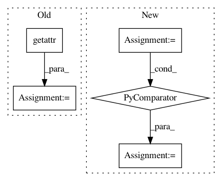

76b2432b1c1ee03c80895a5c7d49cde485323102,qucumber/nn_states/density_matrix.py,DensityMatrix,rotated_gradient,#DensityMatrix#,334
Before Change
of the amplitude and phase RBMS
:rtype: list[torch.Tensor, torch.Tensor]
rotated_grad = [
torch.zeros(
getattr(self, net).num_pars, dtype=torch.double, device=self.device
)
for net in self.networks
]
UrhoU, UrhoU_v, v = unitaries.rotate_rho_prob(
self, basis, sample, include_extras=True
)
After Change
raw_grads = [self.am_grads(v, v, expand=True), self.ph_grads(v, v, expand=True)]
rotated_grad = [
-cplx.einsum("ij,ij...->...", UrhoU_v, g, imag_part=False)
for g in raw_grads
]
return [g / UrhoU for g in rotated_grad]
def am_grads(self, v, vp, expand=False):
In pattern: SUPERPATTERN
Frequency: 4
Non-data size: 5
Instances
Project Name: PIQuIL/QuCumber
Commit Name: 76b2432b1c1ee03c80895a5c7d49cde485323102
Time: 2019-12-22
Author: emerali@users.noreply.github.com
File Name: qucumber/nn_states/density_matrix.py
Class Name: DensityMatrix
Method Name: rotated_gradient
Project Name: PIQuIL/QuCumber
Commit Name: 76b2432b1c1ee03c80895a5c7d49cde485323102
Time: 2019-12-22
Author: emerali@users.noreply.github.com
File Name: qucumber/nn_states/complex_wavefunction.py
Class Name: ComplexWaveFunction
Method Name: rotated_gradient
Project Name: rail-berkeley/softlearning
Commit Name: abb4e425ff57acad92d42e92a6c76526a3b49e27
Time: 2019-02-04
Author: hartikainen@berkeley.edu
File Name: softlearning/samplers/simple_sampler.py
Class Name: SimpleSampler
Method Name: sample
Project Name: tyarkoni/pliers
Commit Name: af8f451f0df8f93092d50f28c6200a1ba8f99d81
Time: 2017-12-01
Author: delavega@utexas.edu
File Name: pliers/utils/updater.py
Class Name:
Method Name: check_updates